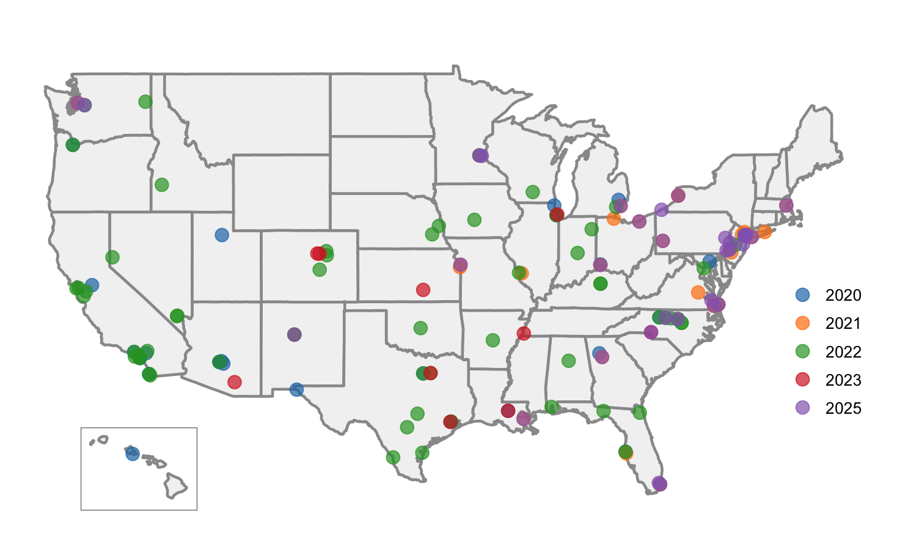

American Local Elections Study
The American Local Elections Study compiles local election data and examines local political attitudes in the United States.
Our Samples

Our Mission
The American Local Elections Study strives to promote the study of local politics in the United States.
Latest Research
Explore our latest research on local elections and democratic participation across the United States.
Data Access
For information about how to access datasets from the American Local Elections Study, contact us.